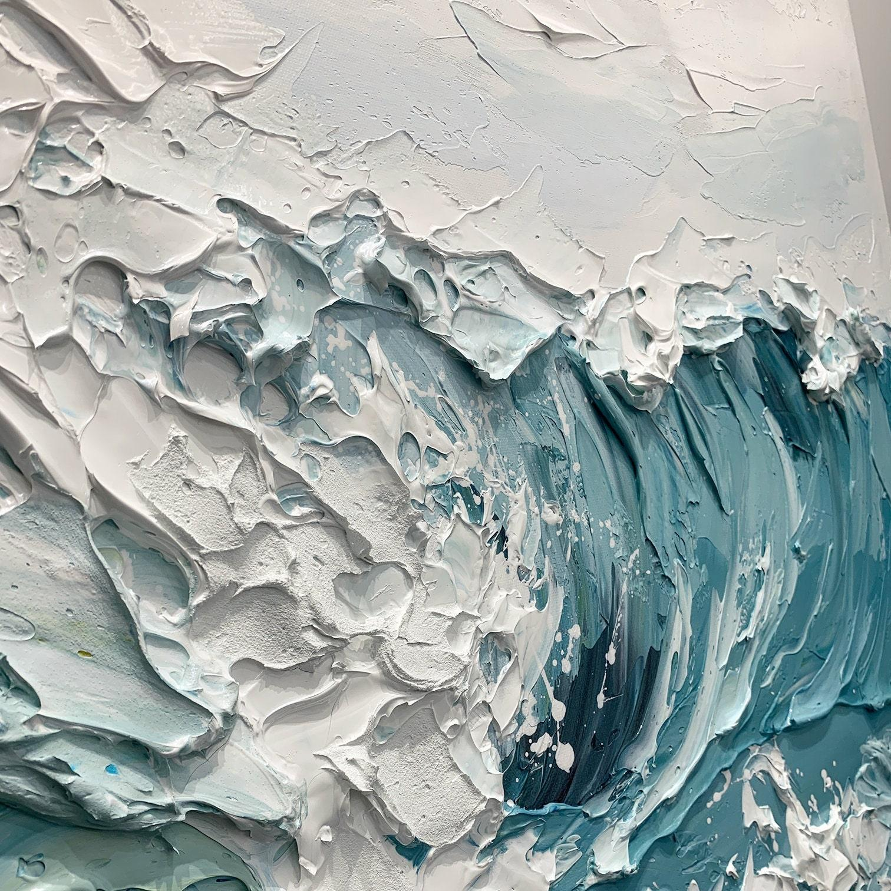
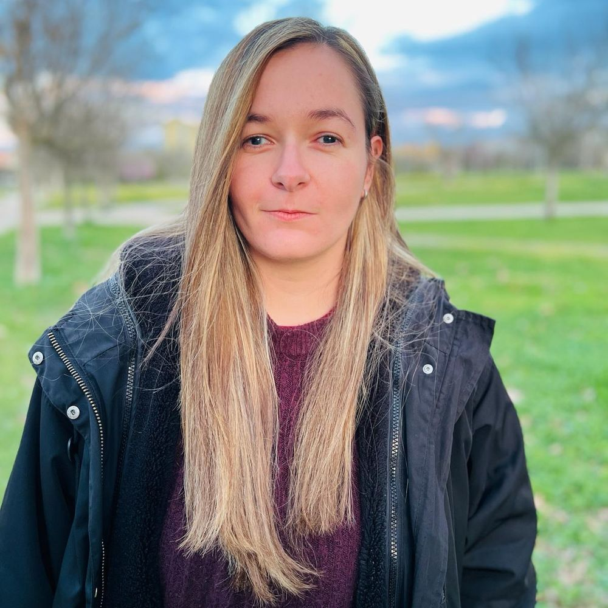
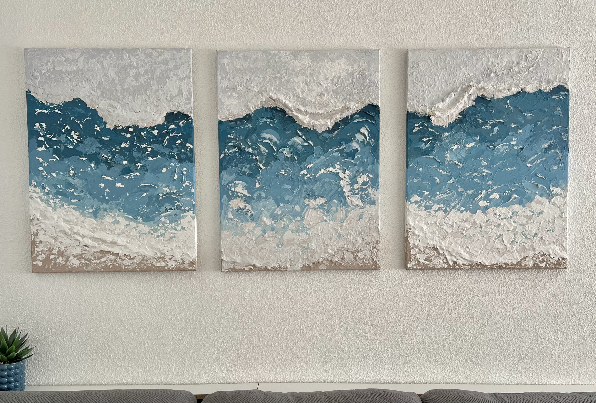
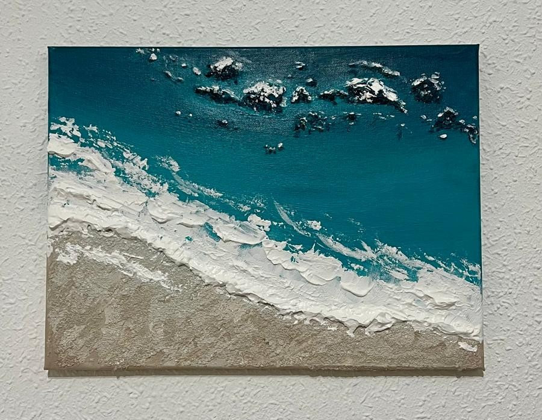
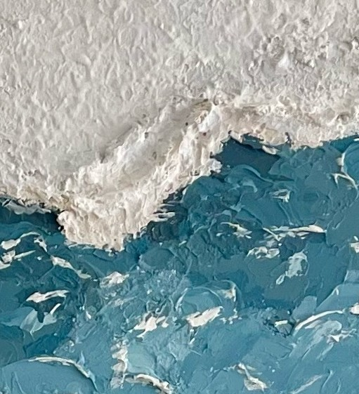

Pintura acrílica texturizada
molicgv.art
Arte inspirado en el mar, creado a través de la textura.
Pintura acrílica, volumen y paisajes marinos que buscan trasladar al lienzo la fuerza y la calma del océano.
Descubrir las obras
La artista
Sobre mí
Hola, soy Mónica Gómez.
Exploro la pintura acrílica texturizada como forma de representar el movimiento del agua, la luz y los paisajes marinos. A través de diferentes materiales y relieves, experimento con las posibilidades de cada lienzo.

Obras y proceso creativo
Trayectoria

Tríptico marino
Obra compuesta por tres lienzos con una composición marina texturizada.

Obra inspirada en el mar
Una pintura individual relacionada con el mar.

Proceso creativo
Textura, volumen y materia
Una mirada cercana a las superficies y relieves que forman parte de la exploración pictórica.
En desarrollo RUST
Agenda
Próximas presentaciones
Actualmente no hay exposiciones programadas. Mientras tanto, puedes seguir mis nuevas obras y procesos creativos en Instagram.
Seguir a molicgv.art en Instagram